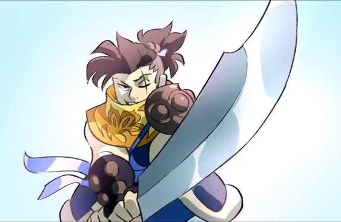
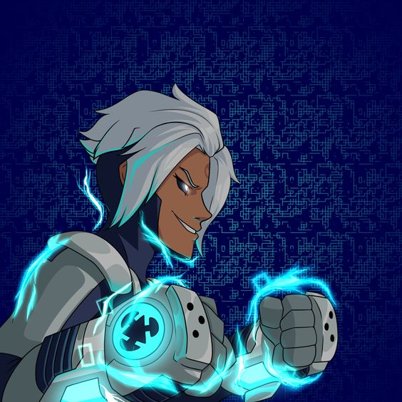
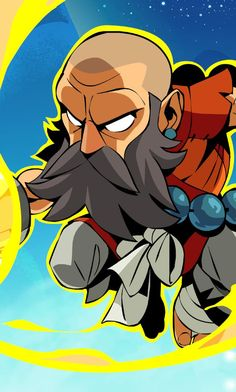
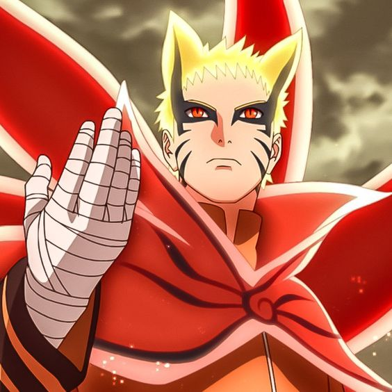
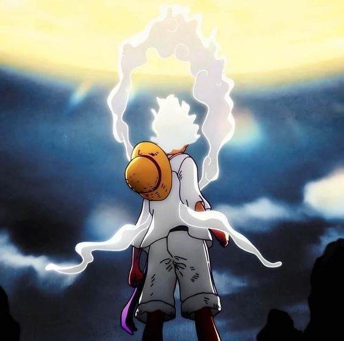

The Crescent Guardian
Jaeyun: "The Crescent Guardian." Jaeyun is recognized for his balanced and versatile combat abilities, combining swift attacks with powerful moves.

The Rune Seeker.
Val: A skilled warrior who wields a sword and gauntlets, Val is known for her agile combat style and powerful rune-based attacks

The Shining Warrior.
Wu Shang: A noble and disciplined fighter with a focus on precision, Wushang wields a sword and gauntlets, emphasizing clean, effective strikes and tactical combat.

The Hokage
Naruto Uzumaki: A ninja with dreams of becoming the strongest leader, the Hokage, and overcoming his troubled past.

The Pirate King
Monkey D. Luffy: A pirate with the ability to stretch his body like rubber, searching for the ultimate treasure, the One Piece.